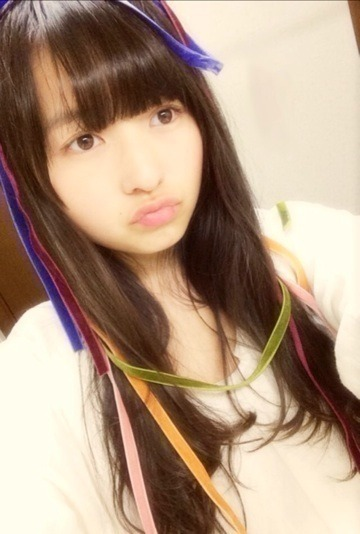
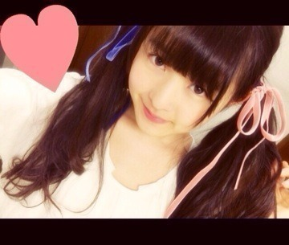

| 2014/03 25 Tue | ねんねしてシャボン 玉。558回目 |

いっぱい買ったベロアのリボン
勿体無くて結局切らず使わなかった...
もう春だからベロアはしまうか...
お茶会楽しかった〜♪
でも緊張するんだよね、
話すの上手くないから
背中汗だらだらでした...
しばらく握手会もなかったからね。
乃木ここ配信されました！
あみちゃんれなりん
まいちゅんきいちゃんと
まいちゅんのこと、
一緒に横アリを振り返りました。
誰が仕込んだのかいつの間に
横アリのまりっか'17流れたのは
びっくりしましたぞ！！！！！！←
...実は横アリで歌い終わった後、
あれ？意外と歌えたかな？
と思っていたのですが
まったくだった！
あんなに声震えてて
喉からからだったとは。
確かに緊張していたけど、
あんなに顔が強張ってる自分を
初めて見ました。
ライブではいつも思いっきり
楽しんでるはずなのに！
お見苦しいかもしれませんが、
ライブ盤まりっか'17は
かなりレアなので
休憩中外に出ていた方、
ライブに来られなかった方は
ぜひ見てください...
あと、乃木ここの最後に
気づいたら片想い初披露も！
この曲だいすきで毎日聴いてる♪
乃木どこの最後に
生まれたままで踊りました。
間奏のダンスがなくて残念だったー
全握のライブ楽しみにしててねっ
ひなちゃんお誕生日おめでとう！
ひなちゃんの
趣味とか加工とかすきです。
私はラブリーなものは着ないけど
見るのがすきで、
ひなちゃんに着てほしい！
極めてほしい！
また今度展覧会行こう♪
なぞの転校生
次が最終回なのかあ...
オープニングとエンディングの映像
すごくすきだ。
本編ももちろんすきだー

髪に結んでみたベロアちゃん、

むふ。
まりか
コメント(723)
2014/03/25 22:48